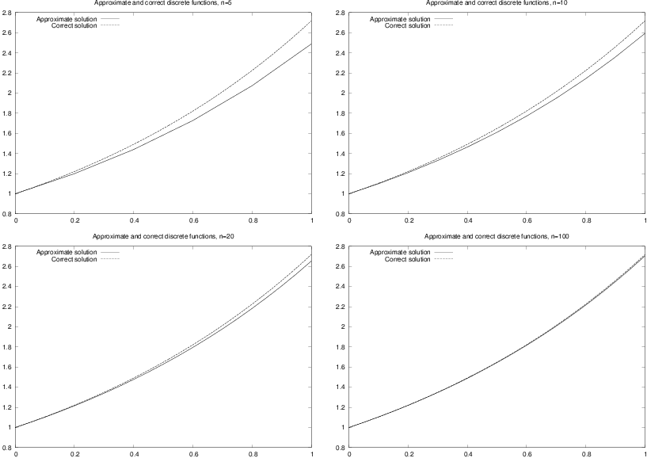
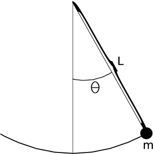
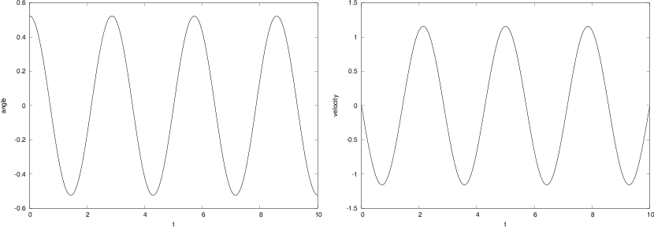
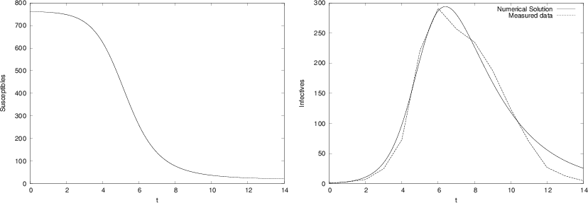

The simplest case
Exponential growth
Logistic growth
A simple pendulum
A model for the spreading of a disease
Exercises
Exercise 1: Solve a nonhomogeneous linear ODE
Exercise 2: Solve a nonlinear ODE
Exercise 3: Solve an ODE for \( y(x) \)
Exercise 4: Experience instability of an ODE
Exercise 5: Solve an ODE with time-varying growth
References
Differential equations have proven to be an immensely successful instrument for modeling phenomena in science and technology. It is hardly an exaggeration to say that differential equations are used to define mathematical models in virtually all parts of the natural sciences. In this document, we will take the first steps towards learning how to deal with differential equations on a computer. This is a core issue in Computational Science and reaches far beyond what we can cover in this text. However, the ideas you will see here are reused in lots of advanced applications, so this document will hopefully provide useful introduction to a topic that you will probably encounter many times later.
We will show you how to build programs for solving differential equations. More precisely, we will show how a differential equation can be formulated in a discrete manner suitable for analysis on a computer, and how to implement programs to compute the discrete solutions. The simplest differential equations can be solved analytically in the sense that you can write down an explicit formula for the solutions. However, differential equations arising in practical applications are usually rather complicated and thus have to be solved numerically on a computer. Therefore we focus on implementing numerical methods to solve the equations. The document Programming of ordinary differential equations [1] describes more advanced implementation techniques aimed at making an easy-to-use toolbox for solving differential equations. Exercises in the present document and the mentioned document aim at solving a variety of differential equations arising in various disciplines of science.
As with all the other chapters, the source code can be
found in src, in this case in the subdirectory ode1. The
short form ODE (plural: ODEs)
is commonly used as abbreviation for ordinary
differential equation, which is the type of differential equation
that we address in this document. Actually,
differential equations are
divided into two groups: ordinary differential equations and partial
differential equations. Ordinary differential equations contain derivatives
with respect to one variable (usually \( t \) in our examples), whereas partial
differential equations contain derivatives with respect to more than one
variable, typically with respect to space and time. A typical ordinary
differential equation is
$$
\begin{equation*}
u^{\prime}(t)=u(t),
\end{equation*}
$$
and a typical partial differential equation is
$$
\begin{equation*}
\frac{\partial u}{\partial t}=\frac{\partial^{2}u}{\partial x^{2}}
+\frac{\partial^{2}u}{\partial y^{2}},
\end{equation*}
$$
The latter is known as the heat or diffusion equation.
Consider the problem of solving the following equation $$ \begin{equation} u^{\prime}(t)=t^{3}\tp \tag{1} \end{equation} $$ The solution can be computed directly by integrating (1), which gives $$ \begin{equation*} u(t) = \frac{1}{4} t^4 + C,\end{equation*} $$ where \( C \) is an arbitrary constant. To obtain a unique solution, we need an extra condition to determine \( C \). Specifying \( u(t_1) \) for some time point \( t_1 \) represents a possible extra condition. It is common to view (1) as an equation for the function \( u(t) \) for \( t\in [0,T] \), and the extra condition is usually that the start value \( u(0) \) is known. This is called the initial condition. Say $$ \begin{equation} u(0)=1\tp \tag{2} \end{equation} $$ In general, the solution of the differential equation (1) subject to the initial condition (2) is $$ \begin{align*} u(t) &= u(0)+\int_{0}^{t}u^{\prime}(\tau)d\tau,\\ &= 1+\int_{0}^{t}\tau^{3}d\tau\\ &= 1+\frac{1}{4}t^{4}\tp \end{align*} $$ If you are confused by the use of \( t \) and \( \tau \), don't get too upset:
In mathematics you don't understand things. You just get used to them. John von Neumann, mathematician, 1903-1957.
Let us go back and check the solution derived above. Does \( u(t)=1+\frac{1}{4}t^{4} \) really satisfy the two requirements listed in (1) and (2)? Obviously, \( u(0)=1, \) and \( u^{\prime}(t)=t^{3}, \) so the solution is correct.
More generally, we consider the equation $$ \begin{equation} u^{\prime}(t)=f(t) \tag{3} \end{equation} $$ together with the initial condition $$ \begin{equation} u(0)=u_{0}\tp \tag{4} \end{equation} $$ Here we assume that \( f(t) \) is a given function, and that \( u_{0} \) is a given number. Then, by reasoning as above, we have $$ \begin{equation} u(t)=u_{0}+\int_{0}^{T}f(\tau)d\tau\tp \tag{5} \end{equation} $$ We can find a discrete version of \( u \) by approximating the integral. Generally, an approximation of the integral $$ \begin{equation*} \int_{0}^{T}f(\tau)d\tau \end{equation*} $$ can be computed using the discrete version of a continuous function \( f(\tau) \) defined on an interval \( \left[ 0,t\right] . \) The discrete version of \( f \) is given by \( (\tau_{i},y_{i})_{i=0}^{n} \) where $$ \begin{equation*} \tau_{i}=ih,\text{ and }y_{i}=f(\tau_{i}) \end{equation*} $$ for \( i=0,1,\ldots ,n \). Here \( n\geq 1 \) is a given integer and \( h=T/n. \) The Trapezoidal rule can now be written as $$ \begin{equation} \int_{0}^{T}f(\tau)d\tau\approx\frac{h}{2}\left[ y_{0}+2\sum\limits_{k=1} ^{n-1}y_{k}+y_{n}\right] \tp \tag{6} \end{equation} $$ By using this approximation, we find that an approximate solution of (3)-(4) is given by $$ \begin{equation*} u(t)\approx u_{0}+\frac{h}{2}\left[ y_{0}+2\sum\limits_{k=1}^{n-1}y_{k} +y_{n}\right] . \end{equation*} $$ The program integrate_ode.py computes a numerical solution of (3)-(4), where the function \( f \), the time \( t, \) the initial condition \( u_{0} \), and the number of time-steps \( n \) are inputs to the program.
#!/usr/bin/env python
def integrate(T, n, u0):
h = T/float(n)
t = linspace(0, T, n+1)
I = f(t[0])
for k in iseq(1, n-1, 1):
I += 2*f(t[k])
I += f(t[-1])
I *= (h/2)
I += u0
return I
from scitools.std import *
f_formula = sys.argv[1]
T = eval(sys.argv[2])
u0 = eval(sys.argv[3])
n = int(sys.argv[4])
f = StringFunction(f_formula, independent_variables='t')
print "Numerical solution of u'(t)=%s: %.4f" % \
(f_formula, integrate(T, n, u0))
Terminal> python src-ode1/integrate_ode.py 't*exp(t**2)' 2 0 10
Numerical solution of u'(t)=t*exp(t**2): 28.4066
Terminal> python src-ode1/integrate_ode.py 't*exp(t**2)' 2 0 20
Numerical solution of u'(t)=t*exp(t**2): 27.2060
Terminal> python src-ode1/integrate_ode.py 't*exp(t**2)' 2 0 50
Numerical solution of u'(t)=t*exp(t**2): 26.8644
Terminal> python src-ode1/integrate_ode.py 't*exp(t**2)' 2 0 100
Numerical solution of u'(t)=t*exp(t**2): 26.8154
The exact solution is given by \( \frac{1}{2}e^{2^{2}}-\frac{1}{2}\approx 26.799, \) so we see that the approximate solution becomes better as \( n \) is increased, as expected.
The example above was really not much of a differential equation, because the solution was obtained by straightforward integration. Equations of the form $$ \begin{equation} u^{\prime}(t)=f(t) \tag{7} \end{equation} $$ arise in situations where we can explicitly specify the derivative of the unknown function \( u. \) Usually, the derivative is specified in terms of the solution itself. Consider, for instance, population growth under idealized conditions. We introduce the symbol \( v_i \) for the number of individuals at time \( \tau_i \). The basic model for the evolution of \( v_i \) is: $$ \begin{equation} v_i = (1+r)v_{i-1},\quad i=1,2,\ldots,\hbox{ and } v_0\hbox{ known}\tp \tag{8} \end{equation} $$ The parameter \( r \) depends on the time difference \( \Delta \tau = \tau_i-\tau_{i-1} \): the larger \( \Delta \tau \) is, the larger \( r \) is. It is therefore natural to introduce a growth rate \( \alpha \) that is independent of \( \Delta \tau \): \( \alpha =r/\Delta \tau \). The number \( \alpha \) is then fixed regardless of how long jumps in time we take in the difference equation for \( v_i \). In fact, \( \alpha \) equals the growth in percent, divided by 100, over a time interval of unit length.
The difference equation now reads $$ \begin{equation*} v_i = v_{i-1} + \alpha\Delta \tau\, v_{i-1}\tp\end{equation*} $$ Rearranging this equation we get $$ \begin{equation} {v_i - v_{i-1}\over\Delta \tau} = \alpha v_{i-1}\tp \tag{9} \end{equation} $$ Assume now that we shrink the time step \( \Delta \tau \) to a small value. The left-hand side of (9) is then an approximation to the time-derivative of a function \( v(\tau) \) expressing the number of individuals in the population at time \( \tau \). In the limit \( \Delta \tau\rightarrow 0 \), the left-hand side becomes the derivative exactly, and the equation reads $$ \begin{equation} v'(\tau) = \alpha v(\tau)\tp \tag{10} \end{equation} $$ As for the underlying difference equation, we need a start value \( v(0)=v_0 \). We have seen that reducing the time step in a difference equation to zero, we get a differential equation.
Many like to scale an equation like (10) such that all variables are without physical dimensions and their maximum absolute value is typically of the order of unity. In the present model, this means that we introduce new dimensionless variables $$ \begin{equation*} u = {v\over v_0},\quad t = {\tau\over \alpha}\end{equation*} $$ and derive an equation for \( u(t) \). Inserting \( v=v_0u \) and \( \tau = \alpha t \) in (10) gives the prototype equation for population growth: $$ \begin{equation} u^{\prime}(t)=u(t) \tag{11} \end{equation} $$ with the initial condition $$ \begin{equation} u(0)=1\tp \tag{12} \end{equation} $$ When we have computed the dimensionless \( u(t) \), we can find the function \( v(\tau) \) as $$ \begin{equation*} v(\tau) = v_0u(\tau /\alpha)\tp\end{equation*} $$ We shall consider practical applications of population growth equations later, but let's start by looking at the idealized case (11).
Our differential equation can be written in the form $$ \begin{equation*} \frac{du}{dt}=u, \end{equation*} $$ which can be rewritten as $$ \begin{equation*} \frac{du}{u}=dt, \end{equation*} $$ and then integration on both sides yields $$ \begin{equation*} \ln(u)=t+c, \end{equation*} $$ where \( c \) is a constant that has to be determined by using the initial condition. Putting \( t=0, \) we have $$ \begin{equation*} \ln(u(0))=c, \end{equation*} $$ hence $$ \begin{equation*} c=\ln(1)=0, \end{equation*} $$ and then $$ \begin{equation*} \ln(u)=t, \end{equation*} $$ so we have the solution $$ \begin{equation} u(t)=e^{t}\tp \tag{13} \end{equation} $$ Let us now check that this function really solves (7)-(11). Obviously, \( u(0)=e^{0}=1, \) so (11) is fine. Furthermore $$ \begin{equation*} u^{\prime}(t)=e^{t}=u(t), \end{equation*} $$ thus (7) also holds.
We have seen that we can find a formula for the solution of the equation of exponential growth. So the problem is solved, and it is trivial to write a program to graph the solution. We will, however, go one step further and develop a numerical solution strategy for this problem. We don't really need such a method for this problem since the solution is available in terms of a formula, but as mentioned earlier, it is good practice to develop methods for problems where we know the solution; then we are more confident when we are confronted with more challenging problems.
Suppose we want to compute a numerical approximation of the solution of $$ \begin{equation} u^{\prime}(t)=u(t) \tag{14} \end{equation} $$ equipped with the initial condition $$ \begin{equation} u(0)=1\tp \tag{15} \end{equation} $$ We want to compute approximations from time \( t=0 \) to time \( t=1 \). Let \( n\geq 1 \) be a given integer, and define $$ \begin{equation} \Delta t=1/n \tp \tag{16} \end{equation} $$ Furthermore, let \( u_{k} \) denote an approximation of \( u(t_{k}) \) where $$ \begin{equation} t_{k}=k\Delta t \tag{17} \end{equation} $$ for \( k=0,1,\ldots,n \). The key step in developing a numerical method for this differential equation is to invoke the Taylor series as applied to the exact solution, $$ \begin{equation} u(t_{k+1})=u(t_{k})+\Delta tu^{\prime}(t_{k})+O(\Delta t^{2}), \tag{18} \end{equation} $$ which implies that $$ \begin{equation} u^{\prime}(t_{k})\approx\frac{u(t_{k+1})-u(t_{k})}{\Delta t}\tp \tag{19} \end{equation} $$ By using (14), we get $$ \begin{equation} \frac{u(t_{k+1})-u(t_{k})}{\Delta t}\approx u(t_{k})\tp \tag{20} \end{equation} $$ Recall now that \( u(t_{k}) \) is the exact solution at time \( t_{k}, \) and that \( u_{k} \) is the approximate solution at the same point in time. We now want to determine \( u_{k} \) for all \( k\geq 0. \) Obviously, we start by defining $$ \begin{equation*} u_{0}=u(0)=1. \end{equation*} $$ Since we want \( u_{k}\approx u(t_{k}), \) we require that \( u_{k} \) satisfy the following equality $$ \begin{equation} \frac{u_{k+1}-u_{k}}{\Delta t}=u_{k} \tag{21} \end{equation} $$ motivated by (20). It follows that $$ \begin{equation} u_{k+1}=(1+\Delta t)u_{k}\tp \tag{22} \end{equation} $$ Since \( u_{0} \) is known, we can compute \( u_{1},u_{2} \) and so on by using the formula above. The formula is implemented in the program exp_growth.py. Actually, we do not need the method and we do not need the program. It follows from (22) that $$ \begin{equation*} u_{k}=(1+\Delta t)^{k}u_0 \end{equation*} $$ for \( k=0,1,\ldots,n \) which can be evaluated on a pocket calculator or even on your cellular phone. But again, we show examples where everything is as simple as possible (but not simpler!) in order to prepare your mind for more complex matters ahead.
#!/usr/bin/env python
def compute_u(u0, T, n):
"""Solve u'(t)=u(t), u(0)=u0 for t in [0,T] with n steps."""
u = u0
dt = T/float(n)
for k in range(0, n, 1):
u = (1+dt)*u
return u # u(T)
import sys
n = int(sys.argv[1])
# Special test case: u'(t)=u, u(0)=1, t in [0,1]
T = 1; u0 = 1
print 'u(1) =', compute_u(u0, T, n)
float object u by its new value as this saves a lot of storage
if \( n \) is large.
Running the program for \( n=5,10,20 \) and \( 100 \), we get the approximations 2.4883, 2.5937, 2.6533, and 2.7048. The exact solution at time \( t=1 \) is given by \( u(1)=e^{1}\approx2.7183 \), so again the approximations become better as \( n \) is increased.
An alternative program, where we plot \( u(t) \) and therefore store all the \( u_k \) and \( t_k=k\Delta t \) values, is shown below.
#!/usr/bin/env python
def compute_u(u0, T, n):
"""Solve u'(t)=u(t), u(0)=u0 for t in [0,T] with n steps."""
t = linspace(0, T, n+1)
t[0] = 0
u = zeros(n+1)
u[0] = u0
dt = T/float(n)
for k in range(0, n, 1):
u[k+1] = (1+dt)*u[k]
t[k+1] = t[k] + dt
return u, t
from scitools.std import *
n = int(sys.argv[1])
# Special test case: u'(t)=u, u(0)=1, t in [0,1]
T = 1; u0 = 1
u, t = compute_u(u0, T, n)
plot(t, u)
tfine = linspace(0, T, 1001) # for accurate plot
v = exp(tfine) # correct solution
hold('on')
plot(tfine, v)
legend(['Approximate solution', 'Correct function'])
title('Approximate and correct discrete functions, n=%d' % n)
savefig('tmp.pdf')
Figure 1: Plots of exact and approximate solutions of \( u^{\prime}(t) = u(t) \) with varying number of time steps in \( [0,1] \).

Exponential growth can be modelled by the following equation $$ \begin{equation*} u^{\prime}(t)=\alpha u(t) \end{equation*} $$ where \( a>0 \) is a given constant. If the initial condition is given by $$ \begin{equation*} u(0)=u_{0} \end{equation*} $$ the solution is given by $$ \begin{equation*} u(t)=u_{0}e^{\alpha t}. \end{equation*} $$ Since \( a>0, \) the solution becomes very large as \( t \) increases. For a short time, such growth of a population may be realistic, but over a longer time, the growth of a population is restricted due to limitations of the environment. Introducing a logistic growth term, we get the differential equation $$ \begin{equation} u^{\prime}(t)=\alpha u(t)\left( 1-\frac{u(t)}{R}\right), \tag{23} \end{equation} $$ where \( \alpha \) is the growth-rate, and \( R \) is the carrying capacity. Note that \( R \) is typically very large, so if \( u(0) \) is small, we have $$ \begin{equation*} \frac{u(t)}{R}\approx0 \end{equation*} $$ for small values of \( t, \) and thus we have exponential growth for small \( t; \) $$ \begin{equation*} u^{\prime}(t)\approx au(t). \end{equation*} $$ But as \( t \) increases, and \( u \) grows, the term \( u(t)/R \) will become important and limit the growth.
A numerical scheme for the logistic equation (23) is given by $$ \begin{equation*} \frac{u_{k+1}-u_{k}}{\Delta t}=\alpha u_{k}\left( 1-\frac{u_{k}}{R}\right) , \end{equation*} $$ which we can solve with respect to the unknown \( u_{k+1} \): $$ \begin{equation*} u_{k+1}=u_{k}+\Delta t\alpha u_{k}\left( 1-\frac{u_{k}}{R}\right) \tp \end{equation*} $$ This is the form of the equation that is suited for implementation.
So far we have considered scalar ordinary differential equations, i.e., equations with one single function \( u(t) \) as unknown. Now we shall deal with systems of ordinary differential equations, where in general \( n \) unknown functions are coupled in a system of \( n \) equations. Our introductory example will be a system of two equations having two unknown functions \( u(t) \) and \( v(t) \). The example concerns the motion of a pendulum, see Figure 2. A sphere with mass \( m \) is attached to a massless rod of length \( L \) and oscillates back and forth due to gravity. Newton's second law of motion applied to this physical system gives rise the differential equation $$ \begin{equation} \theta^{\prime\prime}(t)+\alpha\sin(\theta)=0, \tag{24} \end{equation} $$ where \( \theta=\theta(t) \) is the angle the rod makes with the vertical, measured in radians, and \( \alpha=g/L \) (\( g \) is the acceleration of gravity). The unknown function to solve for is \( \theta \), and knowing \( \theta \), we can quite easily compute the position of the sphere, its velocity, and its acceleration, as well as the tension force in the rod. Since the highest derivative in (24) is of second order, we refer to (24) as a second-order differential equations. Our previous examples in this document involved only first-order derivatives, and therefore they are known as first-order differential equations.
Figure 2: A pendulum with \( m= \) mass, \( L= \) length of massless rod and \( \theta=\theta(t)= \) angle.

We shall not solve the second-order equation (24) as it stands. We shall instead rewrite it as a system of two first-order equations so that we can use numerical methods for first-order equations to solve it.
To transform a second-order equation to a system of two first-order equations, we introduce a new variable for the first-order derivative (the angular velocity of the sphere): \( v(t) = \theta'(t) \). Using \( v \) and \( \theta \) in (24) yields $$ \begin{equation*} v'(t) + \alpha \sin(\theta) = 0\tp\end{equation*} $$ In addition, we have the relation $$ \begin{equation*} v = \theta'(t)\end{equation*} $$ between \( v \) and \( \theta \). This means that (24) is equivalent to the following system of two coupled first-order differential equations: $$ \begin{align} \theta^{\prime}(t) & =v(t), \tag{25}\\ v^{\prime}(t) & =-\alpha\sin(\theta)\tp \tag{26} \end{align} $$ As for scalar differential equations, we need initial conditions, now two conditions because we have two unknown functions: $$ \begin{align*} \theta(0) & =\theta_{0},\\ v(0) & =v_{0}, \end{align*} $$ Here we assume the initial angle \( \theta_{0} \) and the initial angular velocity \( v_{0} \) to be given.
It is common to group the unknowns and the initial conditions in 2-vectors: \( (\theta(t),v(t)) \) and \( (\theta_0,v_0) \). One may then view (25)-(26) as a vector equation, whose first component equation is (25), and the second component equation is (26). In Python software, this vector notation makes solution methods for scalar equations (almost) immediately available for vector equations, i.e., systems of ordinary differential equations.
In order to derive a
numerical method for the system (25)-(26),
we proceed as we did above for one equation with one unknown function.
Say we want
to compute the solution from \( t=0 \) to \( t=T \) where \( T>0 \) is given. Let
\( n\geq 1 \) be a given integer and define the time step
$$
\begin{equation*}
\Delta t=T/n.
\end{equation*}
$$
Furthermore, we let \( (\theta_{k},v_{k}) \) denote approximations of the exact
solution \( (\theta(t_{k}),v(t_{k})) \) for \( k=0,1,\ldots,n \). A
Forward Euler type of method will now read
$$
\begin{align}
\frac{\theta_{k+1}-\theta_{k}}{\Delta t} & =v_{k},
\tag{27}\\
\frac{v_{k+1}-v_{k}}{\Delta t} & =-\alpha\sin(\theta_{k})\tp
\tag{28}
\end{align}
$$
This scheme can be rewritten in a form more suitable for implementation:
$$
\begin{align}
\theta_{k+1} & =\theta_{k}+\Delta t\, v_{k},
\tag{29}\\
v_{k+1} & =v_{k}-\alpha\Delta t\sin(\theta_{k})\tp
\tag{30}
\end{align}
$$
The next program, pendulum.py,
implements this method
in the function pendulum. The input parameters to the model,
\( \theta_{0} \), \( v_{0}, \), the final time \( T \), and the number of time-steps \( n \),
must be given on the command line.
#!/usr/bin/env python
def pendulum(T, n, theta0, v0, alpha):
"""Return the motion (theta, v, t) of a pendulum."""
dt = T/float(n)
t = linspace(0, T, n+1)
v = zeros(n+1)
theta = zeros(n+1)
v[0] = v0
theta[0] = theta0
for k in range(n):
theta[k+1] = theta[k] + dt*v[k]
v[k+1] = v[k] - alpha*dt*sin(theta[k+1])
return theta, v, t
from scitools.std import *
n = int(sys.argv[1])
T = eval(sys.argv[2])
v0 = eval(sys.argv[3])
theta0 = eval(sys.argv[4])
alpha = eval(sys.argv[5])
theta, v, t = pendulum(T, n, theta0, v0)
plot(t, v, xlabel='t', ylabel='velocity')
figure()
plot(t, theta, xlabel='t', ylabel='velocity')
Figure 3: Plot of the motion of a pendulum. Left: the angle \( \theta(t) \). Right: angular velocity \( \theta ' \).

Mathematical models are used intensively to analyze the spread of infectious diseases. In the simplest case, we may consider a population, that is supposed to be constant, consisting of two groups; the susceptibles \( (S) \) who can catch the disease, and the infectives \( (I) \) who have the disease and are able to transmit it. A system of differential equations modelling the evolution of \( S \) and \( I \) is given by $$ \begin{align} S^{\prime} & =-rSI, \tag{31}\\ I^{\prime} & =rSI-aI\tp \tag{32} \end{align} $$ Here \( r \) and \( a \) are given constants reflecting the characteristics of the epidemic. The initial conditions are given by $$ \begin{align*} S(0) & =S_{0},\\ I(0) & =I_{0}, \end{align*} $$ where the initial state \( (S_{0},I_{0}) \) is assumed to be known.
Suppose we want to compute numerical solutions of this system from time \( t=0 \)
to \( t=T. \) Then, by reasoning as above, we introduce the time step
$$
\begin{equation*}
\Delta t=T/n
\end{equation*}
$$
and the approximations \( (S_{k},I_{k}) \) of the solution \( (S(t_{k}),I(t_{k})). \)
An explicit Forward Euler method for the system takes the following form,
$$
\begin{align*}
\frac{S_{k+1}-S_{k}}{\Delta t} & =-rS_{k}I_{k},\\
\frac{I_{k+1}-I_{k}}{\Delta t} & =rS_{k}I_{k}-aI_{k},
\end{align*}
$$
which can be rewritten on computational form
$$
\begin{align*}
S_{k+1} & =S_{k} - \Delta trS_{k}I_{k},\\
I_{k+1} & =I_{k} + \Delta t\left( rS_{k}I_{k}-aI_{k}\right) \tp
\end{align*}
$$
This scheme is implemented in the program
exp_epidemic.py where
\( r,a,S_{0},I_{0},n \) and \( T \) are input data given on the command line.
The function epidemic computes the solution \( (S,I) \) to the
differential equation system. This pair of time-dependent
functions is then plotted
in two separate plots.
#!/usr/bin/env python
def epidemic(T, n, S0, I0, r, a):
dt = T/float(n)
t = linspace(0, T, n+1)
S = zeros(n+1)
I = zeros(n+1)
S[0] = S0
I[0] = I0
for k in range(n):
S[k+1] = S[k] - dt*r*S[k]*I[k]
I[k+1] = I[k] + dt*(r*S[k]*I[k] - a*I[k])
return S, I, t
from scitools.std import *
n = int(sys.argv[1])
T = eval(sys.argv[2])
S0 = eval(sys.argv[3])
I0 = eval(sys.argv[4])
r = eval(sys.argv[5])
a = eval(sys.argv[6])
S, I, t = epidemic(T, n, S0, I0, r, a)
plot(t, S, xlabel='t', ylabel='Susceptibles')
plot(t, I, xlabel='t', ylabel='Infectives')
We want to apply the program to a specific case where an influenza epidemic hit a British boarding school with a total of \( 763 \) boys. (The data are taken from Murray [2], and Murray found the data in the British Medical Journal, March 4, 1978.) The epidemic lasted from 21st January to 4th February in 1978. We let \( t=0 \) denote 21st of January and we define \( T=14 \) days. We put \( S_{0}=762 \) and \( I_{0}=1 \) which means that one person was ill at \( t=0. \) In the Figure 4 we see the numerical results using \( r=2.18\times10^{-3},a=0.44,n=1000 \). Also, we have plotted actual the measurements, and we note that the simulations fit the real data quite well.
Figure 4: Graphs of susceptibles (left) and infectives (right) for an influenza in a British boarding school in 1978.

Reader interested in mathematical models for the spreading of infectious diseases may consult the excellent book [2] on Mathematical Biology by J.D. Murray.
Solve the ODE problem
$$
\begin{equation*} u^{\prime} = 2u-1,\quad u(0)=2,\quad t\in [0,6]\end{equation*}
$$
using the Forward Euler method.
Choose \( \Delta t = 0.25 \). Plot the numerical solution together with
the exact solution \( u(t)=\frac{1}{2} + \frac{3}{2}e^{2t} \).
Filename: nonhomogeneous_linear_ODE.
Solve the ODE problem
$$
\begin{equation*} u^{\prime} = u^{q},\quad u(0)=1,\quad t\in [0,T]\end{equation*}
$$
using the Forward Euler method.
The exact solution reads \( u(t)=e^t \) for \( q=1 \) and
\( u(t)=\left( t(1-q)+1\right)^{1/(1-q)} \) for
\( q>1 \) and \( t(1-q)+1>0 \).
Read \( q \), \( \Delta t \), and \( T \) from the command line, solve the ODE,
and plot the numerical and exact solution.
Run the program for different cases: \( q=2 \) and \( q=3 \), with
\( \Delta t =0.01 \) and \( \Delta t =0.1 \). Set \( T=6 \) if \( q=1 \) and
\( T=1/(q-1) -0.1 \) otherwise.
Filename: nonlinear_ODE.
We have given the following ODE problem:
$$
\begin{equation}
{dy\over dx} = {1\over 2(y-1)},\quad y(0)=1+\sqrt{\epsilon},\quad x\in [0,4],
\tag{33}
\end{equation}
$$
where \( \epsilon >0 \) is a small number.
Formulate a Forward Euler method for this ODE problem and compute the solution
for varying step size in \( x \): \( \Delta x=1 \), \( \Delta x=0.25 \), \( \Delta x=0.01 \).
Plot the numerical solutions together with the exact solution
\( y(x) = 1 + \sqrt{x+\epsilon} \),
using 1001 \( x \) coordinates for accurate resolution
of the latter. Set \( \epsilon \) to \( 10^{-3} \).
Study the numerical solution with \( \Delta x=1 \), and use
that insight to explain why this problem is hard to solve numerically.
Filename: yx_ODE.
Consider the ODE problem $$ \begin{equation*} u^{\prime} = \alpha u,\quad u(0)=u_0,\end{equation*} $$ solved by the Forward Euler method. Show by repeatedly applying the scheme that $$ \begin{equation*} u_k = (1 + \alpha\Delta t)^ku_0\tp\end{equation*} $$ We now turn to the case \( \alpha < 0 \). Show that the numerical solution will oscillate if \( \Delta t > -1/\alpha \). Make a program for computing \( u_k \), set \( \alpha = -1 \), and demonstrate oscillatory solutions for \( \Delta t = 1.1, 1.5, 1.9 \). Recall that the exact solution, \( u(t)=e^{\alpha t} \), never oscillates.
What happens if \( \Delta t > -2/\alpha \)? Try it out in the program and
explain why we do not experience that \( u_k\rightarrow 0 \) as \( k\rightarrow\infty \).
Filename: unstable_ODE.
Consider the ODE for exponential growth,
$$
\begin{equation*} u^{\prime} = \alpha u,\quad u(0)=1,\quad t\in [0,T]\tp\end{equation*}
$$
Now we introduce a time-dependent \( \alpha \) such that the growth
decreases with time: \( \alpha (t) = a -bt \). Solve the problem
for \( a=1 \), \( b=0.1 \), and \( T=10 \).
Plot the solution and compare with the corresponding exponential
growth using the mean value of \( \alpha (t) \) as growth factor: \( e^{(a-bT/2)t} \).
Filename: time_dep_growth.
This chapter is taken from the book A Primer on Scientific Programming with Python by H. P. Langtangen, 5th edition, Springer, 2016.